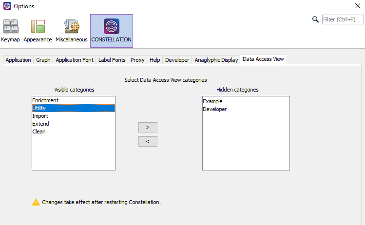
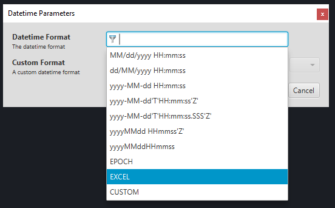
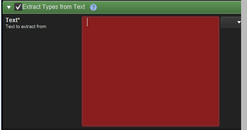
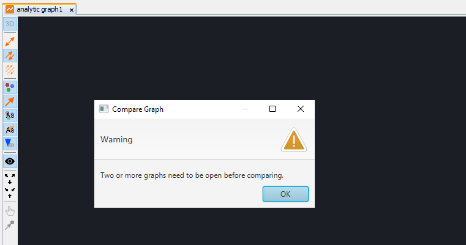

What's new in Constellation v2.7
Here is a list of changes we've added to this version of Constellation v2.7 which are also included in Constellation Cyber v1.6.
Data Access View Show/Hide Categories
Have you ever seen the list of plugins in the Data Access View (DAV) and wished you could hide some of them? Maybe you have seen the Developer category and thought “Why am I seeing Developer plugins? I’m not a developer”. New to 2.7, you are now able to update which categories of DAV Plugins are shown in the view. To do this, navigate to Setup -> Options -> Constellation -> Data Access View. From there you will see two lists, one for visible categories and one for hidden. Simply select the categories you want to move and click on the relevant arrow button to move the categories from one list to the other. The changes will be applied after Constellation is restarted.
Excel Datetime Formatter
A new datetime formatter has been introduced to handle Excel datetimes when importing through the File (or Database) Importer. Previously, the only way to import excel datetimes was to manually convert the times to Epoch and then apply the Epoch formatter. With this new formatter, you will now be able to import those datetimes directly without those (possibly error-prone) extra steps.
Required Parameters
A major quality-of-life improvement introduced in 2.7 relates to plugin parameters. If a parameter requires a value in order for the plugin to run, this parameter will now be marked with “*”, similar to what you might see in online forms. For these required parameters, the field itself will go red if you enter a blank value. This helps with identifying issues with the setup before executing a plugin, rather than having to wait until afterwards when a big error pops up on the screen. To help with this, some of the required parameters now have pre-filled default values where it is appropriate to include one.
Compare Graph Improvement
The Compare Graph plugin was updated in v2.6 so that you could no longer compare a graph with itself. The result of this though was that if you only had one graph open, there would be no options for a graph to compare to and subsequently there was no way of being able to run the plugin successfully. To combat this, the plugin has received another update for 2.7. Now if you only have one graph open, instead of the usual dialog to fill in the parameter values, the plugin will instead inform you that you need at least two graphs open in order to run the plugin.
Several Bug Fixes
On top of the above new features and improvements, a number of bugs were also fixed. These include:
- Dropdown lists next to string parameters once again display recent values
- The Offline Help and Rest Server ports are now different by default
- The folder structure is now included in the file dialog when exporting from Table View
- Templates for the Database Importer can now be saved and loaded
Want to know more?
You can find out more information about the latest updates on the What's new page once you have installed version 2.7. There's loads of extra details available in the Release Notes and Change Log.
Would you like to learn more about how Constellation works?
There is a training package available on GitHub to learn how to make the most use of the various features in Constellation. There is also developer training for those seeking to deep dive into the underlying source code.
Contact Us
Do you have any feedback or suggestions for improvement? Noticed a bug? You can log an issue via the Help menu or clicking here.